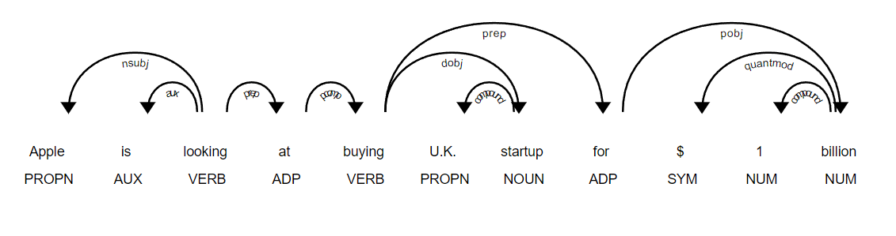
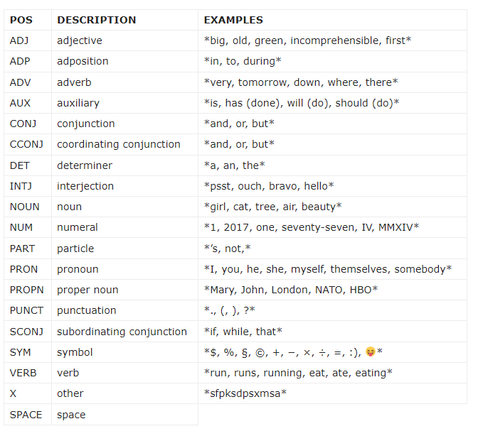

Natural Language Processing (NLP) in Python with 8 Projects - POS Tagging
Natural Language Processing (NLP) in Python with 8 Projects 목차
- Tokenization Basics
- Stemming and Lemmatization
- Stop Words
- Vocabulary_and_Matching
- POS Tagging
- Named Entity Recognition
- Sentence Segmentation
- Spam Message Classification
- Tfidf Vectorizer
- Restaurant Reviews Classification with NLTK
- Restaurant Reviews Classification with NLTK 응용하기
- IMDB and Amazon Review Classification with SpaCy
- Text summarization
- Spam Detection with CNN
- Spam Detection with RNN
- Text Generation with TensorFlow Keras and LSTM
POS Tagging
POS tagging이 왜 필요한가?
‘POS tagging은 natural language understanding을 위해 이용된다.’
이것만으로는 POS tagging이 왜 필요한지 와닿지 않기에, 예시로 어떤 로봇이 Text를 음성으로 바꾸어주는 상황을 가정해보자. 로봇이 Text를 음성으로 바꾸어 줄때, 어떻게 발음해야하는가는 매우 중요하다. 가령, Lead를 발음한다고 하면 [리드] 라고 발음 할 수 도 있고, [레드] 라고 발음 할 수도 있지만, 두 가지는 각각 동사와 명사이므로 다른 의미를 가진다고 할 수 있다. 로봇이 Lead의 품사를 알아야 하는 상황이 온 것이다. 이럴 때 중요한 정보를 제공하는 것이 바로 POS tagging이라고 할 수 있겠다. POS tagging은 이 외에도 다양하게 이용된다.
s1 = "Apple is looking at buying U.K. startup for $1 billion"
import spacy
nlp = spacy.load(name='en_core_web_sm')
doc = nlp(s1)
for token in doc:
print(token.text, token.pos_, token.tag_, spacy.explain(token.tag_))
Apple PROPN NNP noun, proper singular
is AUX VBZ verb, 3rd person singular present
looking VERB VBG verb, gerund or present participle
at ADP IN conjunction, subordinating or preposition
buying VERB VBG verb, gerund or present participle
U.K. PROPN NNP noun, proper singular
startup NOUN NN noun, singular or mass
for ADP IN conjunction, subordinating or preposition
$ SYM $ symbol, currency
1 NUM CD cardinal number
billion NUM CD cardinal number
- CD:cardinal number :주요한 숫자
- NNP:명사 , NNPS: 복수명사
- IN:접속사,conjunction
- PUNCT (punctuation): 구두점
- ADV(adverb): 부사
- ADJ(adjective): 형용사
for token in doc:
print(token.pos_)
PROPN
AUX
VERB
ADP
VERB
PROPN
NOUN
ADP
SYM
NUM
NUM
for token in doc:
print(token.tag_)
NNP
VBZ
VBG
IN
VBG
NNP
NN
IN
$
CD
CD
for key, val in doc.count_by(spacy.attrs.POS).items():
print(key, doc.vocab[key].text, val)
96 PROPN 2
87 AUX 1
100 VERB 2
85 ADP 2
92 NOUN 1
99 SYM 1
93 NUM 2
Visualizing the POS Tags in Spacy
from spacy import displacy
displacy.render(docs=doc, style='dep',options={'distance' : 80}, jupyter=True)

-
AUX : auxiliary(보조동사(be동사,조동사 포함됨))
-
POS 태그 리스트 참고 https://dbrang.tistory.com/1245
Tutorial on Spacy Part of Speech (POS) Tagging
The Part of speech tagging or POS tagging is the process of marking a word in the text to a particular part of speech based on both its context and definition. In simple language, we can say that POS tagging is the process of identifying a word as nouns, pronouns, verbs, adjectives, etc.
품사 태깅 또는 POS 태깅은 문맥과 정의를 기반으로 텍스트의 단어를 특정 품사로 표시하는 프로세스입니다. 쉽게 말해서 POS 태깅은 단어를 명사, 대명사, 동사, 형용사 등으로 식별하는 과정이라고 할 수 있습니다.
Why POS tag is used
Some words can function in more than one way when used in different circumstances. The POS Tagging here plays a crucial role to understand in what context the word is used in the sentence. POS Tagging is useful in sentence parsing, information retrieval, sentiment analysis, etc.
일부 단어는 다른 상황에서 사용될 때 여러 가지 방식으로 기능할 수 있습니다. 여기서 POS 태깅은 해당 단어가 문장에서 어떤 맥락에서 사용되는지 이해하는 데 중요한 역할을 합니다. POS 태깅은 문장 파싱, 정보 검색, 감정 분석 등에 유용합니다.
POS Tagging in Spacy Library
Spacy provides a bunch of POS tags such as NOUN (noun), PUNCT (punctuation), ADJ(adjective), ADV(adverb), etc. It has a trained pipeline and statistical models which enable spaCy to make classification of which tag or label a token belongs to. For example, a word following “the” in English is most likely a noun.
Spacy는 NOUN(명사), PUNCT(구두점), ADJ(형용사), ADV(부사) 등과 같은 많은 POS 태그를 제공합니다. SpaCy가 어떤 태그 또는 레이블을 분류할 수 있도록 하는 훈련된 파이프라인 및 통계 모델이 있습니다. 토큰이 속해 있습니다. 예를 들어, 영어에서 “the” 뒤에 오는 단어는 명사일 가능성이 높습니다.
Spacy POS Tags List
from IPython.display import Image # 주피터 노트북에 이미지 삽입
Image("C://Users/MyCom/jupyter-tutorial/Natural Language Processing (NLP) in Python with 8 Projects/data/20211103_144905_1.png")

Spacy POS Tagging Example
POS Tagging in Spacy library is quite easy as seen in the below example. We just instantiate a Spacy object as doc. We iterate over doc object and use pos_ , tag_, to print the POS tag. Spacy also lets you access the detailed explanation of POS tags by using spacy.explain() function which is also printed in the same iteration along with POS tags.
Spacy 라이브러리의 POS 태깅은 아래 예제와 같이 매우 쉽습니다. 우리는 단지 Spacy 객체를 문서로 인스턴스화합니다. doc 객체를 반복하고 pos_ , tag_를 사용하여 POS 태그를 보여지게 할것입니다. Spacy는 또한 spacy.explain() 함수를 사용하여 POS 태그에 대한 자세한 설명에 액세스할 수 있습니다.
import spacy
nlp = spacy.load("en_core_web_sm")
doc = nlp("Get busy living or get busy dying.")
# tab 간격을 숫자로 나타냄
print(f"{'text':{8}} {'POS':{6}} {'TAG':{6}} {'Dep':{6}} {'POS explained':{20}} {'tag explained'} ")
for token in doc:
print(f"{token.text:{8}} {token.pos_:{6}} {token.tag_:{6}} {token.dep_:{6}} {spacy.explain(token.pos_):{20}} {spacy.explain(token.tag_)}")
text POS TAG Dep POS explained tag explained
Get VERB VB ROOT verb verb, base form
busy ADJ JJ acomp adjective adjective (English), other noun-modifier (Chinese)
living VERB VBG xcomp verb verb, gerund or present participle
or CCONJ CC cc coordinating conjunction conjunction, coordinating
get VERB VB conj verb verb, base form
busy ADJ JJ acomp adjective adjective (English), other noun-modifier (Chinese)
dying VERB VBG xcomp verb verb, gerund or present participle
. PUNCT . punct punctuation punctuation mark, sentence closer